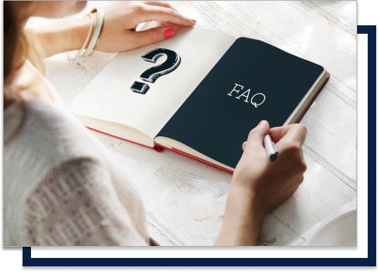

<section class="section-10">
    <div class="side-space">
        <div class="d-flex">
            

            <div class="acc-wrap">
                <div class="accordion active">
                    <p class="question"><strong>What do you mean by a pre-existing disease?</strong></p>
                    <p>Any condition, ailment or injury or related condition(s), for which you have had signs or symptoms, and/or were diagnosed, and/or received medical advice/treatment, within 36 months prior to the first policy with the insurance company is called a pre-existing disease.</p>
                </div>

                <div class="accordion">
                    <p class="question"><strong>What do you mean by waiting period?</strong></p>
                </div>

                <div class="accordion">
                    <p class="question"><strong>What does annual sum insured mean?</strong></p>
                </div>

                <div class="accordion">
                    <p class="question"><strong>If I increase my sum insured at the time of renewal, does a waiting period apply?</strong></p>
                </div>
                <div class="accordion">
                    <p class="question"><strong>My employer provides me with a health insurance. Do I still need one?</strong></p>
                </div>

                <a href="" class="button">View More </a>
            </div>
        </div>
    </div>
</section>